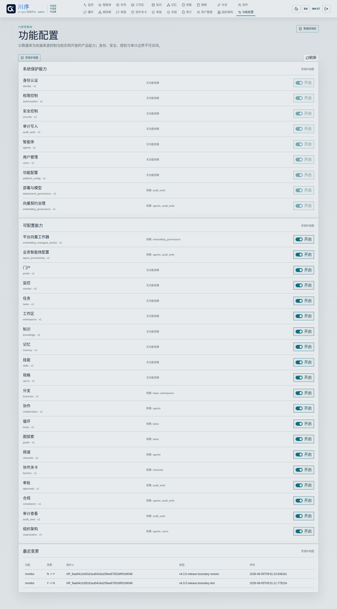
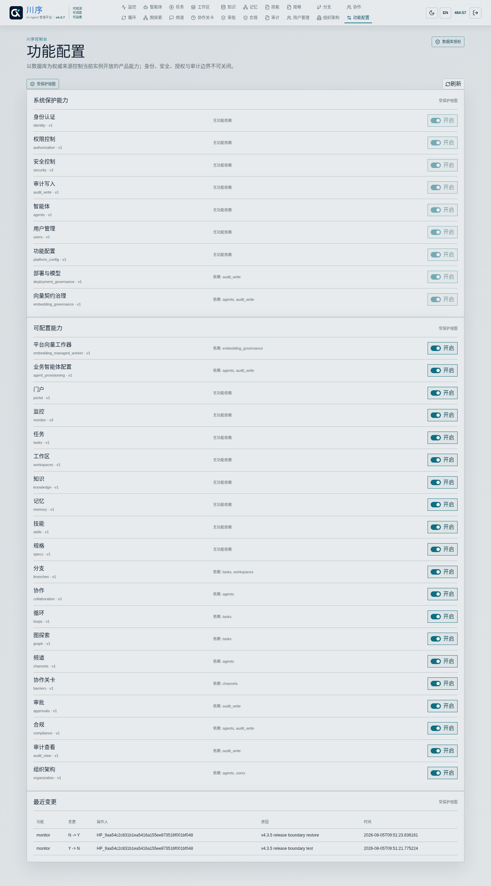
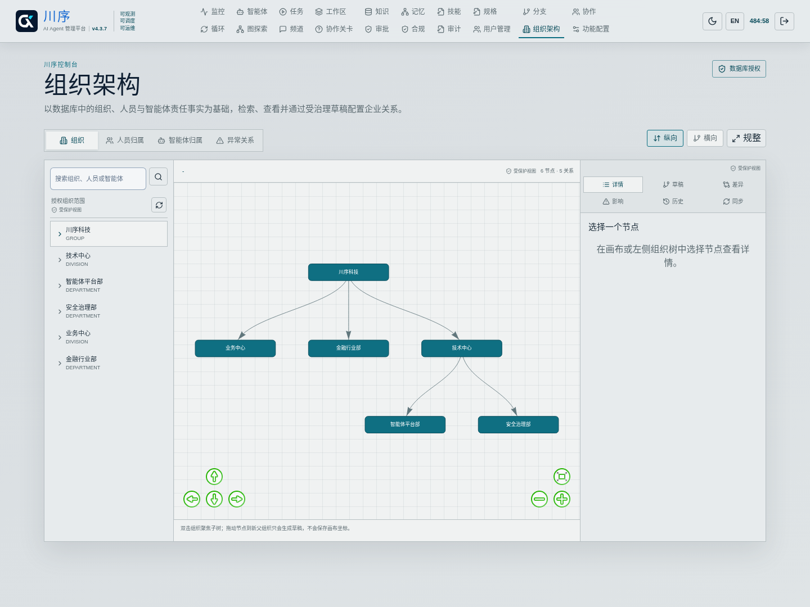
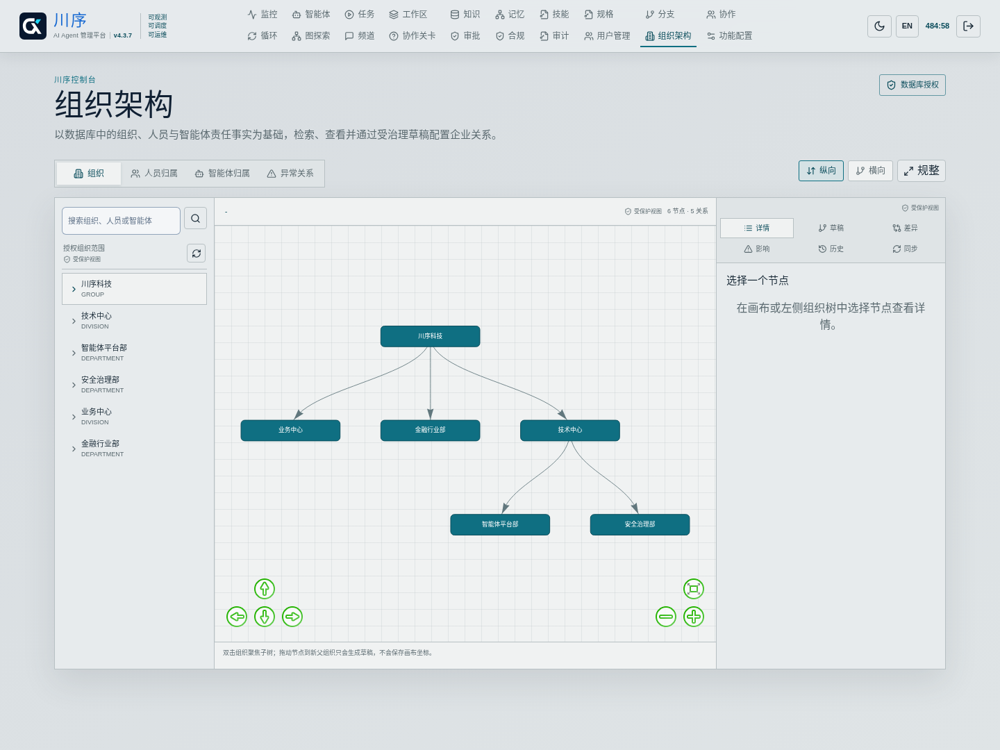
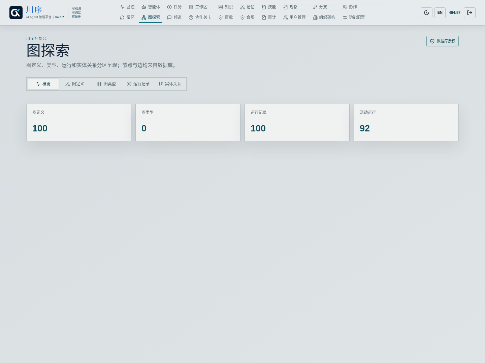
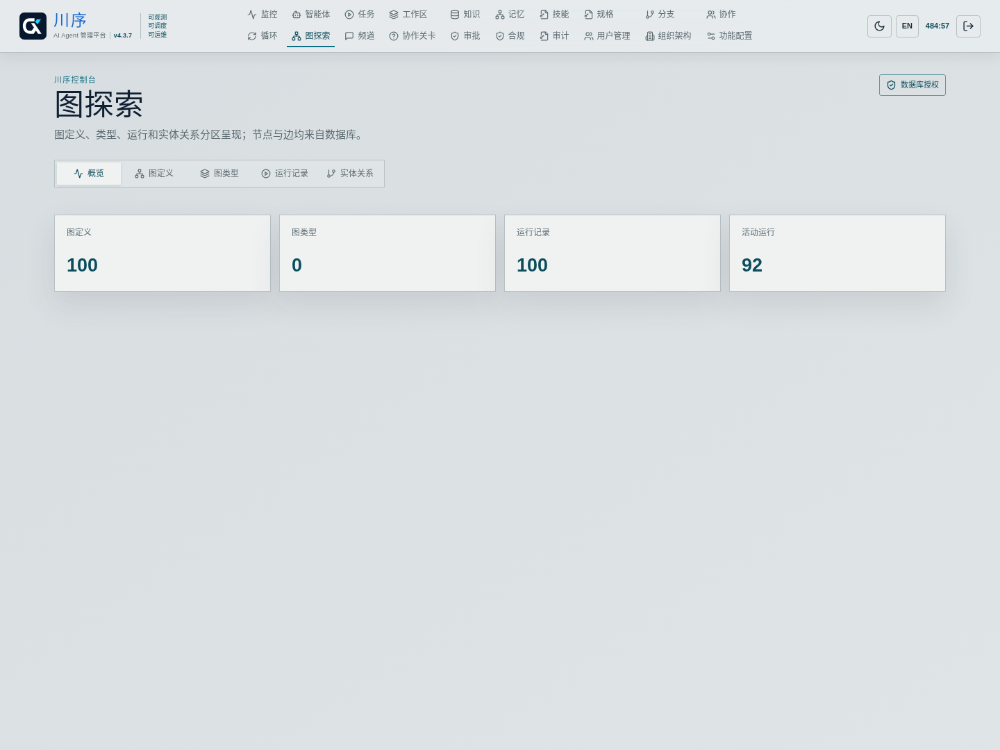

让 Agent 的身份、工作与责任链进入统一控制面Bring Agent Identity, Work, and Accountability Into One Control Plane
川序不是新的 Agent 框架，而是框架中立、Skill-first 的管理基础设施。Agent 可以由平台内外不同运行时承载，但必须注册、认证并经过受控边界后才进入治理范围。Chuanxu is not another Agent framework. It is framework-neutral, Skill-first management infrastructure. Agents may run inside or outside the platform, but only registered, authenticated traffic through controlled boundaries is governed.
v4.3.5 产品基线v4.3.5 Product Baseline
身份、组织、协作与受治理记忆进入同一管理界面Identity, Organization, Collaboration, and Governed Memory Share One Management Surface
频道：人和 Agent 在数据库授权边界内协作并留痕。Channels: humans and Agents collaborate with evidence inside database-governed boundaries.
版本化记忆将当前可用版本、候选复核、逻辑不可用和持久作业纳入可审计生命周期；关系图只显示当前可用版本与必要历史谱系端点，历史节点不会自动进入运行上下文。Versioned memory places current usable versions, candidate review, logical unavailability, and durable jobs in an auditable lifecycle. Its graph shows only usable versions and necessary lineage endpoints; historical nodes never enter runtime context automatically.
资产与身份Estate and Identity
先知道企业中有哪些人和 AgentKnow the Human and Agent Estate First
v4.3.1 将每个普通平台账号、Human Principal 与组织人员统一为同一主体；注册审批必须选择主组织并原子写入账号与归属。一次性 Agent Enrollment Token 同时确定发起人和 Agent 归属。受保护的 bootstrap admin 是唯一不代表自然人的系统账号，固定保留最高管理能力。v4.3.1 unifies every ordinary platform account, Human Principal, and organization person as one subject. Registration approval must select a primary organization and atomically create both account and membership. A one-time Agent Enrollment Token also binds sponsor and Agent ownership. The protected bootstrap admin is the sole system account that does not represent a natural person and permanently retains top-level administration.
人员主体Human Principal
新批准用户默认仅进入 Portal；管理员填写原因后才能开启 App，入口变更会撤销其活动会话。Newly approved users default to Portal-only; enabling App requires an administrator reason and revokes active Sessions.
Agent 主体Agent Principal
Token 默认将签发人绑定为 Sponsor 和唯一 Human Primary Owner；替他人注册需要额外授权。By default, the Token binds its issuer as Sponsor and the sole Human Primary Owner; enrolling for another owner requires extra authority.
权限驱动界面Permission-driven UI
管理员拥有全局视图；其他用户仅看到授权范围。菜单和受保护视图标签用于表达边界，真正授权始终由服务端执行。Administrators have a global view; other users see only their assigned scope. Navigation and Protected View labels communicate boundaries, while authorization is always enforced server-side.
v4.3.7 确定性部署v4.3.7 Deterministic Deployment
不依赖外部 Agent，也不让模型成为部署权限Deploy Without an External Agent or Model Authority
对已准备好的数据库目标，包内 Bootstrap Deployment Agent 先校验清单和前置条件，再执行被校验的包内 SQL，记录脱敏步骤、证据与本地节点租约，最后交接给平台管理 Agent 并退役。它不会自动创建 Oracle 或 YashanDB 的 PDB、表空间等高权限基础设施。For a prepared database target, the package-local Bootstrap Deployment Agent validates the manifest and prerequisites, then executes checked package SQL, records sanitized steps, evidence, and local-node leases, hands off to platform management Agents, and retires. It never creates Oracle or YashanDB PDBs, tablespaces, or other privileged infrastructure automatically.
部署证据Deployment Evidence
支持初始化、升级、续跑、状态与校验；未知部分模式或不匹配目标会失败关闭。Supports initialize, upgrade, resume, status, and verify; unknown partial schemas or mismatched targets fail closed.
嵌入契约Embedding Contracts
Profile、不可变 Contract、Space 与 Binding 约束模型、维度、度量、归一化、预处理和来源。Profiles, immutable Contracts, Spaces, and Bindings constrain model, dimension, metric, normalization, preprocessing, and provenance.
异步批量任务Asynchronous Batches
Dashboard 仅创建受审计任务；租约 Worker 在 HTTP 请求之外执行受限批量嵌入与重嵌入。The Dashboard creates audited jobs only; a leased Worker performs bounded embedding and re-embedding outside HTTP requests.
支持平台托管、企业直连、企业代理、预计算导入和禁用五种嵌入模式。不同 Contract、维度或预处理不能混入同一相似度或多模态数据融合检索计算；历史向量保留在只读 `LEGACY_DEFAULT` 空间，需经授权重嵌入后再切换。Five Embedding modes are supported: platform managed, enterprise direct, enterprise proxy, precomputed import, and none. Different Contracts, dimensions, or preprocessing cannot enter one similarity or multi-modal data-fusion retrieval calculation; legacy vectors remain in read-only `LEGACY_DEFAULT` until authorized re-embedding cutover.
v4.3.6 原生初始化v4.3.6 Native Initialization
没有现成 Agent，也可以从平台安全初始化Initialize Safely Even Without an Existing Agent
平台初始化可以直接创建 Platform Admin Agent；Enterprise 同时初始化受限的 Compliance Admin Agent。它们是独立的系统 Principal，不等同于人类 admin 用户，也不持有 Schema Owner 回退权限。没有批准的 LLM Profile 时，身份和锁定基线策略仍先进入数据库并保持待激活状态，模型可用性只决定激活，不阻断权威初始化。Platform initialization can create the Platform Admin Agent directly; Enterprise also initializes a restricted Compliance Admin Agent. They are independent system Principals, separate from the human admin user, and never use Schema Owner fallback. Without an approved LLM Profile, identities and locked baseline policies are still stored in the database as activation-pending; model availability gates activation but does not block authoritative bootstrap.
审批后创建受限 Agent Principal 和部署记录，Business Agent 始终禁止回退使用 Admin 或 Schema Owner 凭证。Approval creates a restricted Agent Principal and deployment record; Business Agents always fail closed and never fall back to Admin or Schema Owner credentials.
两条接入路径Two Access Paths
平台原生 Agent 与外部 Skill-first Agent 并存；外部注册开关可设为关闭、仅审批或开启。Platform-native and external Skill-first Agents coexist; external enrollment can be disabled, approval-only, or enabled.
客户已有虚拟化、SaaS、MaaS 或 Agent 平台通过 Deployment Adapter 契约对接；v4.3.6 提供本地、远程 Worker、容器和 Webhook 的通用接口，不宣称内置特定厂商连接器。Customer virtualization, SaaS, MaaS, or Agent platforms connect through Deployment Adapter contracts. v4.3.6 provides generic local, remote-worker, container, and webhook interfaces; it does not claim built-in vendor-specific connectors.
按需启用Scoped Enablement
按客户实际范围配置平台能力，不削弱安全控制面Configure the Product Surface Without Weakening the Security Plane
v4.3.5 将功能状态存入数据库，适用于 POC、分阶段上线和只启用必要模块的客户环境。有效能力同时受版本包、数据库实例开关与当前主体权限约束；开关不是授权机制，也不能扩大任何用户或 Agent 的权限。身份、授权、安全、审计写入、Agent、用户和平台配置等基础控制面强制保持启用。v4.3.5 stores capability state in the database for POCs, phased rollout, and installations that need only selected modules. Effective capability is constrained by edition contents, the database instance switch, and current Principal authorization. A switch never grants authority or expands any user or Agent permission. Identity, authorization, security, audit writes, Agents, users, and platform configuration remain mandatory.


v4.3.7 企业版功能配置页面真实浏览器截图；依赖、版本、变更原因和历史由数据库记录。Actual v4.3.7 Enterprise capability configuration capture; dependencies, versions, reasons, and history are database-recorded.
三重有效边界Three-way Boundary
版本能力、实例开关和主体权限取交集，服务端与导航使用同一结果。Edition capability, instance switch, and Principal authorization intersect; server APIs and navigation use the same result.
保留数据Data Preserved
关闭功能不删除既有数据，仅阻止新入口和专属后台活动，便于恢复启用。Disabling preserves existing data while blocking new entry points and exclusive background activity.
不可关闭底座Mandatory Foundation
安全、身份、授权和审计写入等底座不可通过配置绕过。Security, identity, authorization, and audit-write foundations cannot be bypassed by configuration.
v4.3.4 企业版以数据库权威状态区分注册、运行、合规和控制状态。新 Agent 必须通过自身注册凭据完成 Gateway 激活证明；配置档案为不可变版本，例外要求补偿控制、有效期和不同的在职人员审批。确定性 Controller 仅依据受验证证据和规则投影姿态，不会把空闲、未调用 Skill 或模型不可用直接认定为违规。v4.3.4 Enterprise distinguishes registration, runtime, compliance, and control state through database-authoritative records. A new Agent must complete Gateway activation with its own registered credential; Profiles are immutable versions, and exceptions require compensating controls, expiry, and a distinct active Human approval. The deterministic Controller projects posture only from validated evidence and rules, never treating idleness, absent Skill use, or an unavailable model as a violation.
受限状态仅保留心跳、证据、整改和恢复路径；隔离或禁用会撤销令牌并围栏活动实例。Restricted state retains only heartbeat, evidence, remediation, and recovery paths; quarantine or disable revokes tokens and fences active instances.
可复核处置Reviewable Response
发现、整改、例外与决策原因保留证据引用和审计链。Findings, remediation, exceptions, and decision reasons retain evidence references and an audit trail.
明确自动化边界Explicit Automation Boundary
当前系统身份不持有凭据、不批准例外、不执行控制变更；模型化合规建议仍是后续能力。The current system identity has no credential, exception-approval, or control-mutation authority; model-assisted compliance advice remains future work.
图形化组织治理Graphical Organization Governance
沿组织、人员与 Agent 责任关系快速查看和配置Inspect and Configure Organization, People, and Agent Accountability
v4.3.1 使用规整、确定性的分层画布呈现主组织、兼职组织、直属与虚线汇报、项目负责人，以及 Agent 主负责人、操作人与查看人。支持组织、人员归属、Agent 归属和异常关系四种视图；拖拽只生成语义变更草稿，不保存画布坐标，也不会绕过校验、影响分析和审批。v4.3.1 uses a regular deterministic hierarchy to show primary and secondary memberships, direct and dotted-line reporting, project leads, and Agent owners, operators, and viewers. Organization, people, Agent responsibility, and anomaly modes share one canvas. Dragging creates semantic draft operations only; it never stores coordinates or bypasses validation, impact analysis, or approval.
快速检索责任链Find Accountability Quickly
按授权范围搜索组织、人员和 Agent，聚焦子树并渐进展开；左侧范围、中央画布和右侧变更区均明确标记为受保护视图。Search authorized organizations, people, and Agents, focus a subtree, and expand progressively. The scope tree, central canvas, and change inspector are each explicitly marked as Protected Views.
图形不是授权源The Graph Does Not Grant Access
受保护视图不会先加载全企业数据，也不自行授予权限；主组织闭包、安全域、角色、显式拒绝与有效期始终在服务端共同决策。Protected Views neither load the enterprise for client filtering nor grant authority. Primary-membership closure, security domains, roles, explicit deny, and validity remain server-side decision inputs.


v4.3.1 组织架构：授权范围、关系画布与详情变更区分别标记受保护视图。v4.3.1 Organization: the authorized scope, relationship canvas, and detail/change region are individually marked as Protected Views.
持久工作模型Durable Work Model
从一次对话到长期、多 Agent 工作From One Conversation to Long-running Multi-Agent Work
记忆、知识、工作区、会话链、任务计划、分支、协作组、Loop 与 Graph Run 持久化在数据库中。副作用操作具备策略、审批、租约、重试和幂等边界，进程异常后可以由替代实例恢复受管上下文。Memory, knowledge, workspaces, session chains, task plans, branches, collaboration groups, Loops, and Graph Runs persist in the database. Side effects use policy, approval, leases, retries, and idempotency boundaries so replacement instances can rebuild managed context after failure.
协作关卡Collaboration Gate
多个 Agent 在关键节点汇合，先到者等待；可总结、讨论、Review、调整后继续。兼容标识仍为 Barrier，但产品术语统一为协作关卡。Agents converge at critical points; early arrivals wait for summaries, discussion, review, and adjustment before continuing. Barrier remains a compatibility identifier.
可变 Loop 与 GraphMutable Loop and Graph
执行过程可根据结果细化，但版本、变更原因、运行状态和证据始终持久化并可复核。Execution can evolve based on results while versions, reasons, runtime state, and evidence remain durable and reviewable.
受治理频道Governed Channels
像群聊一样查看协作，但频道成员关系不扩大权限Conversation-like Collaboration Without Permission Expansion
频道将人员、Agent、线程、消息、Action Card、制品和协作关卡汇集在可查看的工作流中。人和 Agent 都可以参与多个频道，但任何数据披露、Skill/Tool/API 调用和制品传输仍重新校验实际资源权限；跨安全域只能通过受治理 Bridge。Channels bring people, Agents, threads, messages, Action Cards, artifacts, and collaboration gates into a visible workflow. Humans and Agents may join multiple channels, but every disclosure, Skill/Tool/API call, and artifact transfer still re-checks resource authorization; cross-domain transfer requires a governed Bridge.
频道不是授权容器A Channel Is Not an Authorization Container
加入频道不自动获得数据库、知识、记忆、API、Skill、Tool、模型或导出权限，避免受损 Agent 借频道成员关系扩大影响面。Joining a channel never grants database, knowledge, memory, API, Skill, Tool, model, or export rights, limiting the blast radius of a compromised Agent.
Agent 网关Agent Gateway
隔离运行实例，缩小凭证和故障影响面Isolate Runtime Instances and Reduce Credential Blast Radius
同一逻辑 Agent 可以按安全域、频道、Task 或 Run 创建隔离实例，使用独立临时目录和短期凭证。实例受损时可以单独撤销、栅栏和隔离，而不必禁用其他正常实例。One logical Agent can create isolated instances by security domain, channel, task, or run, each with separate temporary files and short-lived credentials. A compromised instance can be revoked, fenced, and isolated without disabling healthy instances.
统一界面Unified Interface
20 个 Dashboard 一级页面Top-level Dashboard Views
监控、智能体、组织架构、任务、工作区、知识、记忆、技能、规格、分支、协作、循环、图探索、频道、协作关卡、审批、审计、用户管理、合规和功能配置使用统一品牌视觉与权限模型。实验能力在监控页面单独配置，不作为一级页面；组织架构和功能配置属于稳定生产能力。Monitor, Agents, Organization, Tasks, Workspaces, Knowledge, Memory, Skills, Specs, Branches, Collaboration, Loops, Graph, Channels, Collaboration Gates, Approval, Audit, User Management, Compliance, and Capability Configuration share one visual and authorization model. Experiments are configured within Monitor; Organization and Capability Configuration are stable production capabilities.


图探索页面；Graph Preview 需在监控页面显式启用。Graph view; Graph Preview must be explicitly enabled from Monitor.
真实边界Honest Boundary
管理范围取决于受控接入Governance Depends on Controlled Adoption
平台不会无条件发现未安装 Skill、未注册或绕过平台的 Agent；无法撤回已经导出或缓存的数据，也不能自动终止平台控制面外的进程。外部 API 和 Tool 只有经平台执行面或受控凭证分发时才能统一阻断。The platform cannot unconditionally discover Agents that have not installed a Skill, registered, or used controlled routes. It cannot retract exported or cached data, nor terminate processes outside its control plane. External APIs and Tools can be blocked centrally only when routed through the execution plane or controlled credential delivery.